|
Table of Contents < - - - return Chapter 19 < - - - next
World War II Story by Robert F. Gallagher Chapter 18 - St. Goar, Germany War is a profession by
which a man cannot live honorably; an employment by which the soldier, if he
would reap any profit, is obliged to be false, rapacious, and cruel.
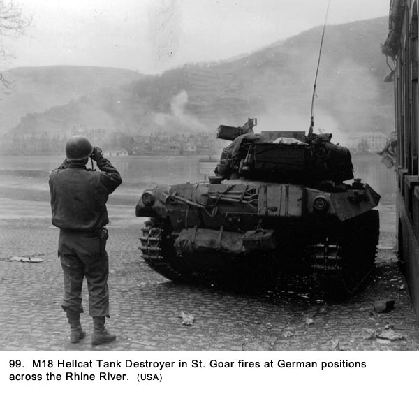 _______________________ Arriving At New Location The convoy took us northwest. When it got dark, we began to stake out places on the truck to bed down. We finally reached our destination at about 0200 hours on the morning of March 24th. We pulled off the road and were guided to a parking place. As usual, we wondered where we were but knew better than to ask. It was pitch black. The only thing we could see was several men with flashlights moving about on the ground. Once the truck engines stopped we could hear voices coming from several directions, but we did not know what was going on. We had expected to unload, but when nobody showed up to tell us to, we crawled back to our makeshift bunks on the truck and tried to sleep. The voices continued throughout the night, and someone in authority was yelling out commands for hours. It had been raining since we left Alzey, and it was still raining when we awoke at dawn. As we looked out the back of our truck, the overcast sky gave a very depressing look to the landscape. We disconnected the 40mm drawbar from the truck, took the pins out of the tailgate, and dropped it to the down position. This gave us a stirrup-like step on each side of the truck about halfway to the ground that made it easier to dismount. Standing on the soggy ground, we went through some stretching exercises to limber up. Although sleeping on the truck kept us dry, the cramped quarters made our muscles stiff, and we needed to move about to loosen up. The battery field kitchen was not set up yet because the cooks had no access to supplies at this remote site, so we were still on rations. Sergeant Emerling put out a garbage can filled with boiling water and some of the men dropped in cans of C-rations to heat them. It caused quite a stir because, with many dozens of cans that all looked alike except for some small print lying together, it was nearly impossible to get back what you had put in. Men were complaining. "I dropped in a can of scrambled eggs and ham and got back one containing some lousy stew." "Mine was in there for ten minutes and this one is barely heated." Finally, one of the cooks who had been scooping out the cans with a shovel and was the object of the most abuse decided that it was all a bad idea. He spilled the contents of the garbage can out on the ground with the comment, "Go fish!" I had just approached the container of heated water with my can of ration when the container was tipped over, so I wound up eating cold hash that morning for breakfast. We were in the midst of a large bivouac area and there were a lot of GIs in every direction we looked. Across the road from us was an encampment of hundreds of men who, we found out later, were part of the infantry. They were standing around in the light rain near a wooded area and looked quite glum. There were no buildings in which to take cover, and the few tents that had been pitched were set up for their headquarters (translation: for the officers). The GIs were all standing around in groups with their raincoats or ponchos on. Their helmets and coats were shining from being wet; and the men had their M-1 rifle slung upside down over their shoulders and under their raingear. The ends of the barrels protruded a few inches down past the bottom of their rain gear. We assumed trucks parked down the road had brought them to the area but for some reason they could not use them for shelter. We felt fortunate we always had a dry place to go when it rained, even in a remote assembly area like this. We were getting very attached to our trucks, and we felt somewhat sorry for those who didn't have one as a base camp. There were other trucks and soldiers down the road in the other direction that appeared to be an ordinance unit. The road they were on led into a heavily wooded area. The trucks were laden with equipment and supplies. Their drivers had set up a piece of canvas between two of the trucks, and about a dozen of the drivers were huddled under it to avoid the rain, most of them smoking cigarettes. They were all sitting on five-gallon gas cans and they did not have their guns with them. Unlike the men from the infantry unit, these drivers did not seem nearly as glum. In fact, they were taking turns telling jokes, and uproarious laughter would come from them every few minutes. We commented on the difference in moods between the two groups, and Bapst said, "It's not hard to pick out the guys who are gonna fight the Krauts and those who will just deliver the K-rations." Off in the distance were some very large artillery pieces. From their immense size, we speculated they were 155mm howitzers, the biggest tactical guns the Army had. Someone pointed out the powder charges stacked near the guns were separate from the shell; that definitely identified them as 155mm guns. They were set up in position to fire so we knew we were not a great distance from the enemy. Early in the afternoon we heard some rumbling noises from what must have been heavy artillery off in the distance. It continued on and off for several hours. It created a certain amount of anxiety among our crew even though we were all trying to look nonchalant. The men located down the road in ordinance had given up their joke telling and were back on their trucks. The infantrymen were snaking around in several long lines to get cups of hot water and what looked like K-rations from their kitchen personnel. We kept glancing at the 155mm guns in anticipation of their firing, but they remained silent. Nothing went on at our site for most of the day, so we just hung out around our trucks, and occasionally moved around to talk with friends in other gun sections. The rain stopped late in the afternoon. While we were still not told anything about what was going on, it was obvious from the amount of men, artillery, and supplies at this site something big was in the offing. We were about to participate in a major operation to cross the Rhine River, which was considered the Germans' last bastion of defense and the symbolic line of their heartland. We started to hear a rumor passed down to us by headquarters personnel that the American Army had crossed the Rhine River at several locations, including one by the Third Army at a town called Nierstein near our previous gun position at Alzey, but, like all rumors, we did not know if it was reliable. Until we reached this location, it didn't really matter to us.
Although we did not know it at the time, we in the 815th Antiaircraft Battalion were attached to the 89th Infantry Division for this crossing.
Scouting For Gun Positions At about 2000 hours that evening, one of our officers, Lieutenant Kraft, came up to our truck and told several of us we were going up ahead to scout for places to put our guns. We had no idea how far ahead he meant. He picked out Dillon, Grimes, and me to go with him. We thought we were going in his Jeep, but he said it was having some mechanical problems. We were told we were near the Rhine River and the Germans were on the other side. It was welcome news to get even a smattering of information about our location but we were suspicious of the reason. Kraft said, "We'll take your two-and-a-half ton truck," as he pointed at Grimes." We thought, A two-and-a-half ton truck on a
reconnaissance mission? That's what he said! Kraft climbed into the cab of the truck next to Grimes, who was the regular driver. Dillon and I mounted the back end and sat on 40mm boxes of ammunition. Le Claire and Bernal were standing on the ground near the back of the truck, and they were needling Dillon and me about the trip. "Keep your ass down, your head up and your rifles ready," said Bernal with a snicker. "If Grimes gets another flat, see if you can get those Krauts to come over on this side and help you change it. Remember where your home is and don't forget to write," chided Le Claire. "Blow it out your ass," responded Dillon. Although we had been at this site all day and part of the night before, we had not seen a single vehicle head toward the river. Why not? Did the American Army control the land right up to the water's edge? If they did, why weren't they being supplied along this road? All Kraft had said was the Germans were on the other side. We had a lot of questions, and at the time they seemed quite important. The most important one was, what were we getting in to? We headed northeast, leaving the security of the many troops and equipment in the bivouac area. The Rhine River flows from the southeast to the northwest in the area where we were. We traveled about five miles on a two-lane road through a dense forest and then over a flat, relatively open area for about two more miles. It was dark, and we traveled with the truck's night lights (sometimes called blackout lights) on, which meant it was like having no lights at all. They were just little slits on the truck's covered headlights that could be seen only from about thirty feet away by someone approaching us head-on. They threw no light at all on the road. Off in the distance we could see the outline of some hills but nothing else. If there were any houses along the open area, they showed no lights and were not visible to us. The moon was more than half full that night but it was visible only part of the time because of the many clouds in the sky. When the moon was out, Grimes would speed up, because he could see the road more clearly. When it went behind the clouds, he had to slow down considerably. I am not sure Kraft would have picked Grimes to be the driver that night if he knew about his driving skills, or lack thereof, as well as we did. Even though he had been driving an Army truck now for more than a year and a half, he still seemed to have trouble shifting gears. Each movement into another gear when he tried to double clutch resulted in a loud grinding of teeth. But that wasn't his only problem, and because we were always riding with him, they were our problems, too. He was very unlucky and more than a little reckless. In convoys, whenever we made an extended stop, it was part of the truck driver's job to get out and check for flat tires. The dual tires in the rear had to be kicked to see if they had lost air. Grimes seemed to have many more flats than anyone else, and, because we helped him change the tires, we encouraged him to ignore some of those where he had dual wheels. His recklessness was something we liked sometimes and hated others. He drove his truck like it was a sports car, or at least a Jeep, within the limits that its size presented. As young men, most of the rest of the crew enjoyed the thrill of speed and sharp turns; but there were times when the close calls we had were downright nerve-racking. As we proceeded toward the river, we kept expecting Kraft to order the truck to stop on the flat area before we reached the rim where the land dropped off dramatically into the deep valley where the river flowed. Surely, he wasn't taking us down to the river when the German army was supposed to be entrenched on the other side. We came to the rim and headed down into the valley. We had not passed another vehicle since we left the bivouac area, and there were none on the road going down. "If this is American territory, where are the GIs?" Dillon blurted out. Grimes had the truck in a very low gear to help in braking, and we were crawling down the very steep and winding road at a relatively slow speed. When the moon was out, we could see clearly across the river and it gave us a very eerie feeling. If we could see across so clearly, the Germans could see us just as well. We now knew why there was no traffic on the road. Anybody on the other side had a clear view across the valley and a moving vehicle would be a real standout. Because of the apprehension we felt, the trip seemed much longer than it actually was. We finally got down into the town spread out along the bank of the river. There was a strange silence about the area. A burning smell and smoke were coming from the underside of the truck. It was the brake pads; Grimes had been riding the brakes all the way down the steep embankment in order to reduce our speed. The smoke soon dissipated, but the smell lasted much longer. The buildings in the town were spread out about five blocks deep from the river and extended about a mile along its length. We turned down a street parallel to the Rhine and one block away from it. It was the main street, Heerstrasse. The moon's rays bathed one side of the street in light while the other side was covered in shadows. There were little shops on both sides that were closed and out of business. The buildings were all three stories high with no space between them. They had that typical Bavarian look about them with high-pitched roofs and wood beams imbedded in the stucco exteriors. Above the stores were apartments, but there was no sign of the civilians who lived there. All of the windows were dark and the fact there was still glass in them was unusual. A few of the buildings were slightly damaged, but compared to other towns in Germany we had observed, overall it was in good shape. The wet cobblestone street and narrow sidewalks were polished smooth from wear and shone like mirrors in the moonlight. There was no firing going on from either side. "If this is suppose to be the dividing line between the German and American armies, what happened to the shooting war?" I asked Dillon. "Yeah, this is quieter than the bivouac area we just came from, which is fine with me," he replied. "Let's hope it stays that way until we get the hell out of here." "This doesn't make sense," I said. "I would expect there would be wall-to-wall troops and even some armament around here. Maybe Kraft got lost." "If he did, I hope he decides to backtrack in a hurry," responded Dillon. As we proceeded down the street we saw only a few soldiers at first but as we continued on, we realized that there were a lot of GIs around. They were mainly in the shops, but some were sitting on the sidewalk in front. The ones on the sidewalk had their backs against the shops and their rifles across their laps. Many of them were sitting on their helmets because the ground was still wet from the earlier rain. We saw several assault boats leaning on their sides against the buildings next to the street and there were some mortars set up on one side of the street. Kraft asked the men in one of the mortar crews where their CP (Command Post) was, and they identified a shop about a block further down from where we were. They said, "Look for the Lowenbrau (beer) sign." It was the first time I had heard that name. We never found the beer sign and later I wondered if someone was pulling our legs. After another inquiry, we found the CP and parked in front it. I noticed we were the only truck visible in the village. I don't know how the assault boats and troops got down there, but there may have been trucks parked away from the river on the other streets not visible to us. Kraft, Dillon, and I went into the CP, while Grimes stayed with the truck. Inside it was quite dark. As we moved toward the middle of a large room we came upon about twenty GIs, some of whom were sitting while others were lying on the floor. They were not doing anything in particular except relaxing. We stood facing them, and Kraft appeared upset everyone did not jump to attention. The silence produced tension. There was a red glow from several cigarettes. It was too dark to see faces and only enough light to make out their outlines. They said nothing, and, after an uncomfortable long pause, we turned to see four more men standing at a long bar at the far end of the room They had been looking at a map laid out on the bar in front of them, but they were now looking up at us. One of the men had a hand resting on an army telephone in its heavy leather case but it remained silent while we were there. Several candles on each side of the map gave the only light, other than the glow of cigarettes, in the place. The candles threw a yellow light that gleamed on the men's faces with a brightness that made them look like masks. The light also created distorted shadows on the wall behind them. Two of them glanced at each other with an expression that said, And, who do we have here? We walked over to the four, and Kraft asked one of the men, "Who's in charge here?" One of them said, "I am," in a very surly tone. "And who the hell are you?" Kraft was getting upset at such insubordination from what he thought were enlisted men. One of them showed the stripes of a staff sergeant, but the other three showed no rank. None wore helmets. All four men needed shaves, and their uniforms were heavily rumpled. Kraft was dressed like he was going to the officers' ball in the States. His spotless trench coat, well-shined boots, perfectly creased pants, and silver first lieutenant bar on the collar of his starched shirt all reeked of rear echelon. He must have been oblivious of the need to hide all signs of rank in a combat zone. They were like beacons in the night to identify officers who would become the first targets for German snipers. As the evening progressed, we began to wonder if Kraft even realized he was within small arms shooting distance of the enemy. Before Kraft could say anything more, the man who had spoken introduced himself as a major and two of the others as captains, all with last names included. Then Kraft identified himself by rank, name and unit. One of the captains shot a look at the major. The staff sergeant, Dillon, and I were not introduced (part of the officer's code?), having been designated to the status of potted plants. It was like we didn't exist. The major said they were part of the 89th Division, but he did not identify their unit as either engineers or infantry. Maybe they were both. The major spoke with great authority in his voice; there was no need to question he was the man in charge. The next question out of his mouth to Kraft was, "What are you doing here, anyhow?" Our truck was visible through the tavern window and before Kraft could answer the first question, he asked, "Did you really come down here in that goddamn truck? What the hell are you doing here?" All of the officers seemed to be quite upset with Kraft as the other two picked up after the major and took turns telling him about their displeasure. Kraft was well taken back by being spoken to in this curt manner. The fact it was being done in front of his enlisted men made it worse. They told him they had not even brought a Jeep down that road in some time for fear of being shot at by the Germans across the river. They felt that our truck would just draw fire. "Don't you have any Jeeps in your outfit, lieutenant?" asked one of the captains. Kraft didn't answer. They told us we were in the town of St. Goar, and across the river was the town of St. Goarshausen. And, yes, the Germans were firmly entrenched over there (See Fig. 90 & Fig. 91). 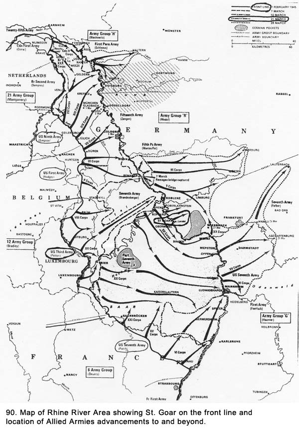
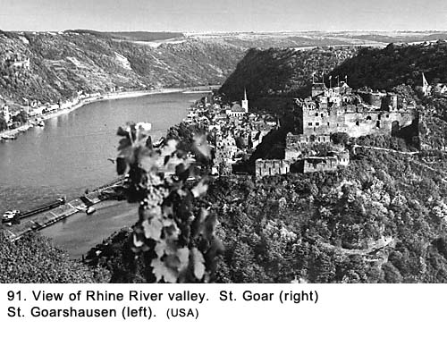 Kraft told the officers we were there reconnoitering for antiaircraft gun positions. They looked surprised and one of the captains raised an eyebrow and shot a glance of disbelief at the major. They told Kraft in no uncertain terms he should be out of St. Goar by 2300 hours because they were going to simulate a river crossing in boats at that time. We checked our watches and it was past 2200 hours. They explained that pretending to make an assault across the river would be a sham to divert the German forces away from another town farther down the river where the Americans were crossing that night. As part of the overall plan, the 87th
Infantry Division of the VIII Corps was scheduled to start their crossing at
midnight, that night (In just two and a half hours). That Division was
concentrated eight miles downstream of St. Goar, to the left of the 89th,
between the towns of Boppard and Rhens. The officers told us the actual crossing at this site by the 89th would come sometime later but they did not specify when. Orders had already been passed down from the Third Army Command to carry out the assault phase of the 89th Rhine River crossing during the night of March 25-26 (the following night). The 89th Division was to concentrate between the towns of Bingen and Boppart, a distance of thirty-five miles. Three sites were designated for the crossings within those limits: Site 1 was located three-quarters of a mile south of Oberweissel; Site 2 was at St. Goar (where we were); and Site 3 was at Wellmich.4 The 168th Engineering Combat Battalion, as part of this Division, was now out reconnoitering this area. They found the river ran in a deep gorge for the full length of the operation and the steep banks would make it extremely difficult to get equipment down to the river's edge without it being detected. The river itself was another obstacle with its swift and treacherous currents. Also, the terrain offered the Germans a sizable advantage in being able to observe and fire from elevated positions.5 The officers said they had been under artillery, mortar, and small arms fire that afternoon. They informed us the enemy artillery was somewhere back away from the valley and there were antiaircraft positions closer to the rim. They did not think the Germans had any tanks over in the main part of the town of St. Goarshausen, but they weren't sure. "Wow! Our first intelligence
briefing," I whispered to Dillon sarcastically as we were leaving. Grimes caught up to us, and we all continued down the street for about four more blocks. When we came to cross streets perpendicular to the river, we ran fast, one at a time, across them for fear of being shot at from across the river. We came to a point where we were at the last building in town. Beyond that point, there was a small park with scattered trees, and beyond that an open area with no visible buildings. We stopped for a minute where we still had a building to shield us from being seen by the Germans across the Rhine. Kraft looked at Dillon and said, "Your gun goes right out there tonight," as he pointed into the park. Dillon looked at Grimes and me like he had not heard Kraft right. His mouth went agape and his large eyes bulged even larger. Dillon was one of those people whose face told exactly what he was thinking, and nobody could look as surprised as him when he was startled. His look of bewilderment under any other circumstances would have been interpreted as comical but not this time. He, Grimes, and I were all thinking the same thing: how do we dig in out in the open like that? We would be perfect targets for anyone across the river. The Germans would be looking and shooting down at us from the sloping ground on the other side. It would be doubtful we could even get a gun pit built, much less man it. And, what in the hell did he mean by tonight? Didn't he hear the major tell him to get out of town by 2300 hours? If they were going to make it a sham crossing, didn't that mean there was to be no crossing in this village tonight? What was he going to do, bring an antiaircraft battalion down that road before the infantry and engineers had even made an assault across the river? We knew that Kraft was a ninety-day wonder (ninety days of training to make an officer and a gentleman), but, up until that night, we had not thought of him as being outright dumb. He made no indication he either saw or knew what we were thinking. As we were fumbling for something to say, he said, "Let's get going," and the three of us began to follow him submissively. We figured he would head back into town. Instead, he started toward the river. Evidently, he was still looking for places to set up gun positions, but we asked no questions because our thoughts were still reeling from the last thing he said about digging in out in the open park. It seemed prudent to keep our mouths shut. We had no fear the enemy could hear us across the river, but there was enough apprehension on our part words did not come naturally. We stayed close to the buildings because the moon was out and it was now quite bright. The shadows of the buildings were hiding us, or at least that's what we were hoping. We turned the corner and were now out in front of the buildings facing the river, still in the shadows, walking parallel to the river. The water was swift, and I thought the engineers were going to have a tough time navigating it in the small boats we had just seen. The moon shone silver on the water and any boats would be easily distinguishable. We were about one hundred feet in from the bank of the river, with only an occasional tree in between. We could make out the buildings and some of the finest details on the other side. I kept glancing over at several open windows in buildings facing the river. What a great places for snipers, I thought. We could not see anyone or anything moving over there except a window shutter moving in the wind. Each time I looked across, my eyes would always fix on that shutter as if it had some special meaning. It might have been because it was the only moving thing we could see. We were all in single file. Dillon was right in front of me. He kept his helmet turned toward the other side of the river. He probably figured if someone over there was taking a bead on his head, the bullet might ricochet off the helmet. There was still no firing going on in the valley, and it was quiet except for the rushing noise of the river. As we looked down the Rhine, we saw there had not been a permanent bridge between the two towns. We assumed the civilians had used a ferryboat to go back and forth, but we saw no sign of one. Down toward the other end of St. Goarshausen we saw several barges tied up at the shore. On our side of the river was an abutment with the stub of a temporary bridge. Again, we speculated the bridge had been originally built by the German army to span the river. They then destroyed it as they retreated across it. We walked until we came to the first street perpendicular to the river. It was over one hundred and fifty feet to the shadows on the other side and we were nervous about running across the moonlighted area with no protection. Even Kraft seemed apprehensive. Until then, we felt he did not fully understand the significance of the enemy being only a few hundred feet away or why would he have gotten us into this situation? Certainly, selecting gun positions could have waited until the opposite side of the river had been secured. We waited several minutes, hoping the moon would go behind some clouds, but the clouds were starting to clear out. Finally, we held our rifles out in front of us in high port and started to race across the open area, each about twenty feet apart from each other. The bright moon shone down like a spotlight. Kraft was first, I was second, and Dillon was next, while Grimes was still back in the shadows getting ready to follow us. Kraft got a little more than halfway across when a command from the darkness across the street rang out, "Halt!" We froze in our tracks. The three of us were standing in the moonlight like clay ducks in a well-lit shooting gallery. Adrenaline mixed with fear started to run heavily. We were so startled by the challenge no one said anything immediately. Perhaps we should have anticipated something like this happening but we didn't. It was now up to us to give the first part of the password for that night. Finally, Kraft said, "What do you want, the password?" What do you think they want, you idiot? I thought. We heard someone in the shadows say, "They don't know it!" Despite the rushing noise being made by the river, we could hear the distinct click of the safety catches being released on about a half-dozen M-1 rifles. We could not see who was in the shadows, but we knew they were GIs on sentry duty. My heart leaped into my mouth, (although it might have been there since we first headed down into the valley), and my mouth suddenly became very dry. I wondered if I could speak and felt my breathing getting heavy as if I had run a long distance. Dillon, Grimes, and I finally shouted out at about the same time, "Fourth!" with some of the responses coming out sounding quite feeble. The password for that day and night was Fourth and the response was July. The guards answered with "July" and told us to proceed into the shadows with them. We yelled for Grimes to come across, and he did. I never saw Grimes run so fast. They questioned us while they had their guns with the safety latches off trained on us. First they wanted to know who we were and why we were there. When Kraft told them, there was absolutely no response. There was a long pause and finally they asked where we lived in the States. When Dillon and I both said "Chicago," one of the men on guard said he was also from there, and he began to ask about specific sites in that city. Evidently, they were still not convinced of our identity. "How far north is Foster Avenue?" "Where's Senn High School?" Dillon had all the answers right off the top of his head, and it was good that he did. I just stood there quiet because evidently, this guy asking the questions was from the North side of the city of which I knew nothing about. As a Southsider, I could have done better with questions about Central Africa. After a few more questions, we convinced them who we were. After that, they began asking more about our unit. When we told them we were with a 40mm antiaircraft outfit, one of them asked, "What the hell are you guys doing here in this town?" Nobody answered. This was the second time this question had come up that evening. It seemed to be a mystery to everyone but Kraft. One of the guards also commented, "You're lucky you didn't get nailed out there. I wouldn't step out in that moonlight for ten days in Paris." That last comment was an indirect condemnation of Kraft's leadership, and I knew he wanted to get going. He did not like what he had encountered down in the town of St. Goar: the officers in the CP had berated him and now an enlisted man was ridiculing him. Finally, we headed inland and turned back down Heerstrasse toward our parked truck. Kraft picked up his pace and said nothing. The rest of us followed along, also not speaking, but our thoughts ran wild with strong feelings of disapproval for our leader. It was a very scary few minutes we had just gone through. I don't know what was going through Kraft's mind back there, but his nonchalant attitude indicated he had no idea how close we all came to getting killed either by the Germans on the other side of the river or by our own men on guard duty. Fortunately for us, the Germans did not have sharpshooters looking for movement across the river, and we wondered if they were really over there. Had they pulled out of the town without the GIs knowing? Those questions would soon be answered. Kraft had evidently given up on looking for new gun sites, so we were now headed toward our truck. Dillon and Kraft were up ahead of Grimes and me. Grimes grabbed my arm to slow me down and allow the other two to get out of hearing range. Grimes was a big talker, but he had been unusually quiet on this trip. He turned to me and said, "Someone ought to shoot that dumb sonofabitch," as he nodded toward Kraft. He then itemized the things that Kraft had done that evening. "First, that a-h--- takes us on a reconnaissance in a truck loaded with ammunition, then he wants us to put our gun in a spot where we would be shot before we could dig the first shovelful of dirt for a gun pit, and then he forgets the password and almost gets us all killed by our own men." He caught me completely by surprise. Although I knew he was impetuous, I did not expect this from him. I also wondered whom he meant by "someone." Certainly, he wasn't talking about us. Or was he? We were getting near to our truck so I did not say anything back to him. We reached the truck and boarded it. As we did, a garage door opened across the street from where we were parked, and a small civilian car pulled out. It was one of the few operating civilian cars we had seen since arriving in Europe, and I was surprised at how small-really small-it was compared to American cars. It was my first look at a Volkswagen (peoples car) Beetle. One of the engineering GIs on the street told us it was a doctor on his way to deliver a baby. It seemed so out of place for what was going on around us. The doctor, who was elderly, had opened the garage door, pulled the car out and then had gone back to close the door. His car was blocking the narrow street, so we had to wait for him to move out of the way before we could turn the truck around. The garage door was stuck, and he was having a hard time getting it closed. As he labored with it, half a dozen GIs just stood there unwilling to offer him a hand. I guess, at this phase of the war all Germans were the enemy to these men, and they were not even going to help an old doctor on a mission of mercy. It took Grimes a half-dozen moves to turn the truck around on the narrow street. Heerstrasse, including the sidewalks on both sides, was only marginally wider than the length of the truck, and he came close to hitting the tavern window as he turned around. Normally, he would have gone up to the first intersection to turn around but that street could be seen from across the river. Grimes was making so much noise grinding the gears while shifting that we drew a lot of stares from the gathering crowd of GIs. There was a lot of activity among them as they headed along the street to their new locations. At first, we thought they had come out of the buildings to watch us but we soon saw they had more serious matters on their minds. They were preparing for the big shooting match they were going to put on for the Germans. I remembered what the major in the CP had said earlier in the evening about the sham crossing. Above all, I was thinking about him saying he did not think that the Germans had any tanks over in St. Goarshausen. I sure hoped he was right. If there were tanks there, they could take direct aim at us on our trip up the hill. There were no armored vehicles or artillery pieces visible to us on our side of the river to return fire if they did. I looked at my watch with its radium dial. The time was approaching 2300 hours. When we finally got headed in the right direction down Heerstrasse, Grimes had to drive slowly to keep from hitting the many GIs. There were now a half-dozen mortar crews set up on the sidewalk farthest from the river and several of them were stacking their shells against the adjoining buildings. Other men were walking along carrying outboard motors, machine guns, boxes of ammunition; and all of them had M-1 rifles slung up over their shoulders. We finally turned and headed up the hill. Dillon and I were dreading the trip. We had not gone a hundred feet up the steep incline when the truck stopped, and Grimes again ground the gear teeth as he downshifted into a lower-probably the lowest-gear. We knew that the lower the gear, the slower our speed would be all the way to the top of the hill. Finally, we were moving at about a two-mile-per-hour pace. It was going to be a long journey. We had gone another short distance when the firing started. The Americans opened up with 20mm's, machine guns, mortars, and small arms fire. Immediately, the Germans started firing back. That answered our question about whether they were still over there. Suddenly, there were some very loud explosions in St. Goar that really got our attention. German artillery that sounded like it was coming from out of the valley joined in the exchange. There were now flashes of light coming up from some of the locations being hit. Ordinarily, the machine guns would use tracers to see where they were firing, but in this situation, they did not want to give out their positions. However, occasionally a single tracer would show up coming from the other side of the river. The GIs had about a dozen outboard engines running at what sounded like full throttle to give the impression they were coming across in motor-propelled assault boats. The noise was intense and was accentuated as it reverberated off the walls of the gorge. The German artillery shells exploding in St. Goar were especially noisy, and we were very nervous about the situation. Most of them hit down near the buildings facing the water, but several of them hit up higher on the sloping ground and we heard the shrapnel from several of them tear through nearby trees. That noise created a more intense fear as it gave the impression we were being fired on directly. Maybe we were. I for one wished we could dive into a nearby ditch to take cover. Dillon and I got out of the truck for awhile and walked about fifty feet behind it, although I do not think that would have been far enough if it exploded from a hit with all of those munitions on board. We thought for sure we were in the crosshairs of some German gunner. The truck was going so slowly we had no trouble keeping up with it, but finally we tired from climbing the steep grade. With the truck moving and the tailgate up, it took several tries and all of our strength to scale the top of the tailgate, which was about six feet off the pavement. I gave Dillon a boost on board and then he helped me on. There, we sat and watched-actually, it was more listening to-the action out the back. Dillon was sitting on some empty sandbags. He looked over at me where I was sitting on a box of ammunition and said, "If we get hit, Gallagher, you're going to get a 40mm shell right up your ass." I responded, "You aren't going to look so great, either. They can bury what's left of you in one of those sandbags you're sitting on and there will be plenty of room left over." While this type of bantering was usually done with smiles, the situation was too tense for any levity. We were like the proverbial jittery guys whistling past the graveyard. After the initial exchange of fire died down, there was less noise but still a lot of rounds crossed the river from both sides, mostly small arms fire with an occasional burst of a machine gun. We could differentiate by the sound which side of the river the machine gun fire was coming from. The German guns fired at a much higher rate. I was still thinking about what Grimes had said about Kraft, and I wondered if Dillon and I would see at any moment Kraft come flying out of the side of the truck cab with Grime's foot on his backside. Fortunately, nothing like that happened, and I finally concluded that Grimes was just blowing smoke. Any way you figure, Kraft was safe. Grimes and I never discussed the matter again, and I never said anything to anyone else about it. Actually, the expression, "I'm going to kill him," or, in this case, "Someone ought to kill him," is heard quite often in the military services but it is seldom meant and implemented even less. These statements or the actual deed that would follow are seldom written or talked about for obvious reasons. With no records to go by, actual figures are impossible to determine but it is generally agreed that the final deed is rare. We were getting near the top of the hill when our truck veered to the right in an evasive move to avoid hitting a Jeep traveling at a very high rate of speed in the opposite direction without lights. There were four people in it, all wearing helmets, but we did not get a good look at them because they went by at a reckless speed. It soon rounded a corner on the winding road, and we lost track of it. It was to be the only moving vehicle other than the German doctor's car we saw on the whole trip. A short time after the Jeep passed, there was a big explosion on or near the road, approximately where we figured the Jeep would have been. Flames shot up for a few seconds and then there was nothing. Was it the Jeep? If it was, did it crash or did an enemy shell hit it? If it was hit, why didn't the Germans fire at us, a much larger target? Several days later, we heard a rumor (which later proved false) the American crossing of the Rhine River at St. Goar was being delayed because the colonel in charge of the operation in that area had been killed during the preparations. At the time, we wondered if he was in the Jeep. We finally reached level ground, and the truck went into high gear. It felt good to put distance between the river and us. When we got back to the bivouac area, we dropped Kraft off at a tent being used as the battery CP. We went back to our crew to give them the bad news about the location of their next gun emplacement. We started referring to it as the suicide mission. When we told them where we had been, several of them did not believe us. We told other gun sections about what Kraft had said, and they kept asking us, "Are you sure he said tonight?" Nobody in our crew slept much that night with the threat of moving down into the valley to dig gun positions hanging over us. The next morning there was a big sigh of relief from all of us because we did not move up during the night like Kraft told us we would. During the night, Dillon asked me, "Did it ever occur to you that the idea of going down into the town last evening to look for gun positions may have been Mc Kee's idea and not Kraft's?" "Never thought of it," I replied, "but it does make sense. Kraft wouldn't take on that much authority on his own." "Sure, I'll bet the whole thing was planned by ole bandy legs himself," he said. "Well, whoever it was, it was a bad idea to start with and Kraft made it even worse by not realizing sooner that we should not have been down there when we went into that CP," said I. "Just be glad that you aren't in an infantry unit with those two guys leading you." Dillon said. Early the next morning, we convinced Dillon, as our crew's ranking noncom, to go to the CP and find out what was going on. We worried the only thing worse than going down into the valley during the night was to go in the daytime when visibility was better. While doing that did not make a lot of sense, neither did Kraft's original idea. Dillon went, and came back a few minutes later with a big smile on his face. It turned out there was a change in plans, or at least in Kraft's plan. Somebody higher in command had decided nobody in our outfit was going down into St. Goar until the Germans were out of St. Goarshausen. We were to move up that night after dark and dig in on the flat area near the rim where the land dropped off. There were smiles all around. Moving Up To The Rhine River At about 1900 hours on Sunday evening, March 25th, we moved up in convoy on the same road we had been on the night before, through the forest, across the open area, and up close to the rim. We turned right and drove through open fields, parallel to the river. Gun sections were dropped out of convoy to establish gun positions along the way. Our truck pulling the 40mm gun stopped about a mile from the road. It was right next to the only other road into St. Goar. The M-51 mount continued across the road and stopped there for their final location. Our two gun crews were about one hundred and fifty feet apart and both units were a hundred feet from the rim. We disconnected the guns from their respective trucks and unloaded the sandbags and long-handled shovels. The large safety pins were pulled from the 40mm gun, the outriggers extended, and the gun dropped down onto its leveling pads. It was set up next to the location for the new pit and was ready to fire from this temporary site if necessary. The trucks were parked in a low area behind some trees, well back from the rim in an area where we planned to set our two tents after the gun pits were completed. It could not be seen from across the river. Immediately, everyone began digging the gun pits. We wanted to be operational and behind sand bags as soon as possible because we were concerned about German artillery on the bluff above St. Goarshausen. Their spotters could locate our gun positions from that elevation, and we wanted to have a place to take cover in case they decided to make us a target. Grimes, Dillon, and I had not forgotten the exciting exchange of fire of the night before. The moon was bright-too bright for our liking-and we were able to clearly see across the river. From our position, we could see only about half the main section of St. Goarshausen that was farthest from the river, but we could see the entire sloping bank that led down to it. There were some houses on the slope but, like the town itself, there was no sign of life. Across the river, we could also see a castle almost directly in line with us. It was built in the fourteenth century and was called the Burgen Katz (Cat, Castle). The Counts of Katzeneinbogen built it. Far off to our left, also overlooking St. Goarshausen was the Burgen Maus (Mouse, Castle) built by the Archbishop of Trent. (This castle is mentioned in Henry Wadsworth Longfellow's poem, The Children's Hour.) Off to our right, the river made a sharp bend. It was the only place we could see the river directly when we looked out from our gun pit. On the opposite bank of the river at this bend was a steep cliff. The site was known for the echo produced there and, of more significance, the extreme difficulty boats had navigating the river around the bend. It inspired German writer Clemens Brentano to create the legend of a beautiful young maiden named Lorelei, who threw herself headlong into the river in despair over a faithless lover. According to the legend, she was transformed into a siren upon her death and could be heard from that time on singing as she sat on the rock, enticing mariners to their death. The road next to our gun position was depressed about six feet below the land adjacent to it. On many occasions, we would go down on this road and up to the rim to see what was going on down by the river. In this part of Germany, the Rhine River flows on an irregular path from the southeast toward the northwest (See Fig. 92). Germany's greatest river, it was the last major bastion of the German defense against the Allied armies. Nobody expected they would surrender its crossing without a bitter battle. 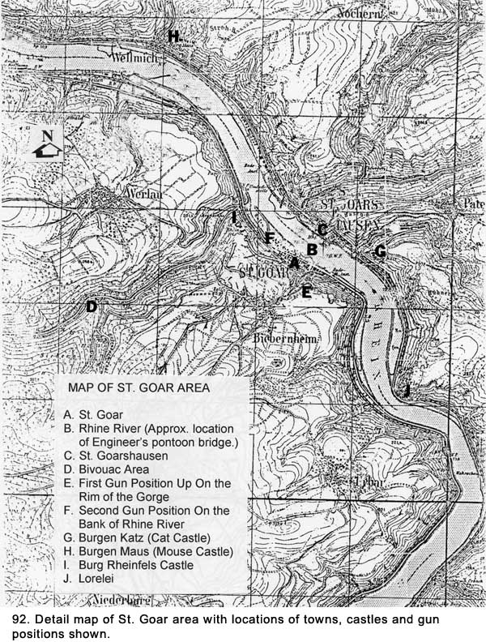
After we had been digging for several hours, we heard the thunderous discharge of the big 155mm artillery pieces from back behind the forest, where we had been bivouacked before moving into gun positions. Even at seven or eight miles away, the guns sounded impressive. There would be sharp noises like claps of thunder followed by a rumbling noise. We were not prepared for what happened next. Seconds after the discharge, a light, shrill sound quickly grew to an unbelievable loud pitch as the screaming projectile from the guns passed over our heads on their way to the town across the river. We were sure each one was headed straight for us. It was terribly frightening. We dropped to the ground or jumped into what had been built of the gun pit when the first volleys came in. The barrage kept up for about an hour. We figured there were eight guns, which would fire in a battery of four, one right after the other. After about a thirty-second delay, the other four would fire. This sequence would be repeated about every five minutes. Finally, we could stand up and just pull our heads down a little as the projectiles arched overhead. As the first shells approached after each pause between firings, we would look at each other to see if someone was going to break and dive to the ground. It would have been the prudent thing to do, but nobody wanted to be the first to make a move, so we all just stood our ground. We figured in order to reach the bottom of the valley where the target was, the shells would have to just clear the rim near us on their downward trajectory. They were not very high above us when they passed overhead. When the shells hit St. Goarshausen, they sounded like a large airplane hangar door being slammed. Light flashes would come up out of the river valley with some of the hits. No one wanted to be on the receiving end of one of them. We prayed they would not fall short. Meanwhile, the Germans were lobbing shells into St. Goar, but from the sound at impact, the shells were much smaller than the Americans'. We could not tell if theirs were mortars or artillery. Mortars would be fired from up close, and make little noise at discharge. Artillery could be fired from many miles away, and it also produced little sound because of the distance. There was nothing falling on the rim where we and the others in our battalion were located. There was more firing down near the river but we were unable to determine its significance. We continued to dig in with a new sense of urgency created by the artillery duel. The thought of having a gun pit for protection propelled us to get the job done as soon as possible. We debated digging foxholes away from the gun in case we were fired on by artillery. That idea was abandoned because we decided it would delay the completion of the gun pit, which would offer protection enough. We did, however, decide to place an extra layer of sandbags across the front of our pit facing the river. When we first arrived at this site one of our crewmembers, Le Claire, had injured himself. He had been standing on some equipment with his head sticking out the top of the truck. As the truck passed under a tree, he was looking toward the back, and a low-hanging branch hit him. He was knocked out for about fifteen minutes, and we had quite a time trying to revive him. When he finally came to, he was disoriented, so we had Grimes drive him back to headquarters to be checked by a medic. Grimes had dropped him off and then returned to help us dig in. When the pit was almost completed, a Jeep showed up delivering Le Claire. He was feeling better and wanted to rejoin our crew. Also in the Jeep were Lieutenant Engler, Sergeant Kornich, and Corporal Sophie, the driver. Engler and Kornich, who were in charge of our platoon, were the best liked lieutenant and sergeant in our outfit. Sophie was the butt of a lot of jokes. He was known to be scared to death of the whole war experience, and it showed on his face. He always looked like he was having a panic attack and was subjected to a lot of teasing because of it. At one of our previous locations, a couple of sergeants told him to go out behind the building where they were billeted and take care of the two German soldiers who were there in the yard. They explained to him that, "They are well dug-in so be careful." Trembling badly, Sophie had gone out to find two graves with the rifles and helmets of German soldiers atop them. All three men got out of the Jeep and stood
around the pit, talking to us. Some small arms fire was coming up out of the
valley but the 155s had been silent for a while. The crew was doing what we
did best. We were complaining about the food rations we had now been on for
about a week and were asking when we were going to get some real chow. The
answer was, "Soon." The battery field kitchen was being set up
back in the bivouac area, and they had located a supply depot. They had
picked up some 10-in-1 rations and hoped to deliver cooked food by truck the
next day. Our griping about the food had another purpose other than the
obvious one of trying to get better food. We had learned if we complained
about something first, it seemed to reduce the amount of things that Engler
and Kornich would find wrong with what we were doing at our gun site. Kornich explained to Crow where the next gun section was so he could string the telephone wire to it. It was just over a small rise, out of sight to us, about a block away. Crow and Hughes decided to lay the wire immediately, primarily because they felt it would be safer at night than in daylight. The moon was bright enough to see where they were going and the route between sites was all over open fields. They took off with their reel of wire. There was nothing between our position and their destination that would warrant exploration so we knew they would be back in a hurry. Soon after they left, while the rest of us were still working on the pit, the 155's went off again - one, two, three, and four. The crew knew what was going to happen next, but our guests didn't. As the projectiles neared our position and the shrill noise got louder, the crewmembers just stood there. The shells whistled low over our heads, and we clenched our teeth in an effort to control our emotions. Engler and Kornich fell flat on the ground with only the front rim of their helmets keeping their faces out of the earth. Sophie dove into the pit and hurt his arm when he hit one of the gun's outriggers. He let out a cry that could have been heard a mile away. The rest of us had intended our unplanned attempt to embarrass the others to be a joke but it backfired because Sophie was hurt. Also, because we liked Engler and Kornich more than the others of their rank, it did not seem right to make them scapegoats whether it was planned or not. There was no way for those who had cowered to recover gracefully. They just got up, brushed off their uniforms, walked to their Jeep, and drove off with Kornich doing the driving. Sophie was either too badly hurt or too scared to do so. Dillon asked, "Who the hell's idea was that anyhow?" We took it to be a rhetorical question, and nobody answered. Unbeknownst to us, the 89th Infantry Division was putting into motion the final plans for the crossing at St.Goar that night.
After the gun pit was completed, Joe Bernal, Wellington, and I went back away from the gorge to the low area where we were to going to pitch our tents. The noise had picked up down in the valley. The gun pit was far enough along where it could easily be finished by the remaining men by daybreak. Trying to make some light conversation during a tense time, I asked Joe Bernal, "Hey Joe, what are you doing without your daily letter from your girl friend?" He had a heavy romance going with this girl from his back of the yards neighborhood in Chicago before he entered service and she wrote him almost on a daily basis. I had heard so much about her when we shared a pup tent on the Mojave Desert in the States, I felt as if I knew her. He had left out none of the details. He responded, "I'm not doing so well, and if we don't get back to the States pretty soon, I may be getting a Dear John letter like Grimes. She said in the last one that she was starting to go to dances at the USO in downtown Chicago. She assured me that there was nothing to worry about, but that's what has me worried." I could see he was really concerned about this girl so I let the subject drop. We unloaded the tent from the truck, carried it over to the hollow, and spread it out on the ground. We were manipulating the center pole to raise it when suddenly the noise down in the valley picked up dramatically. It was many times louder than anything we had heard before, and it was obvious something big was happening. The sound was deafening. Soon after, the valley lit up like someone had turned on massive floodlights. We could see heavy smoke coming from down there, and we realized there was a major fire in progress. What could be burning that made things so bright? It was a real mystery to us. This was a new and unknown factor that increased our nervousness. With the valley lit up like that, any attempt at a surprise crossing would be lost and every boat would be an easily identifiable target. The fire burned itself out in time but the damage to the crossing operation had been done.
We dropped the pole and all three of us raced back to the gun pit. At the pit, everyone looked tense and alert. "What's going on?" I asked. The Infantry Battle Across The Rhine Dillon responded, "We heard over the phone that the crossing has started but I don't know what the hell is burning." In addition to machine gun, mortar, and small arms fire, there were larger explosions than we had ever heard going on in the valley. The American artillery had gone quiet but the Germans were throwing heavy shells into St. Goar. While none of it was landing up in our area, we realized spending time in the gun pit might be a good idea.
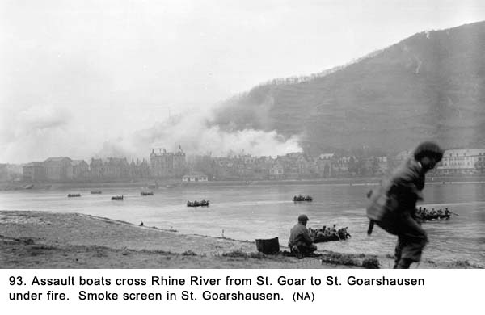
In later waves, men crossed in powerboats, still under heavy fire from the Germans across the river (See Fig. 94). 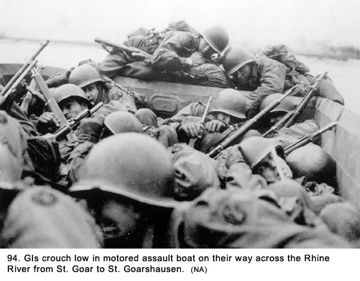
There was a considerable amount of white smoke coming up from the town of St. Goarshausen just inland from the river. We were not sure if it was from shells causing fires or if it was smoke bombs thrown by the invading force to cover their operation, possibly from both. The fighting continued on throughout the night in the valley and the noise varied from loud to deafening. An hour or so before dawn, we heard the roar of mighty engines and unmistakable noise of clanking armored vehicles moving in around us up on the rim. We could see the moon reflecting off metal and hear the crews shouting what sounded like commands. Sometimes, the only indicator of a vehicle was the blue flame flaring out of its exhaust. It was an eerie feeling knowing a major armored vehicle operation was taking place right next to us, yet not being able to determine exactly what they were up to. Later, it became obvious they were getting into positions to fire at targets across the river. We kept our flashlights handy as they maneuvered around getting into position. Although there was moonlight, we knew tanks had limited visibility, and we did not want them to roll right over our gun pit. One of the vehicles roared within ten feet of our pit, and its track crushed one of our water cans. "Watch where you're going, you dumb bastard" yelled Dillon, but his voice was lost in the roar of the engine. The Third Army Shows the Might of Its Armor When dawn broke the next morning, we saw an amazing sight. There were tanks and tank destroyers lined up along the rim, about one hundred feet apart, for the entire length of the town down in the valley. There were about twelve to our right and they extended as far to our left as we could see. Some were up close to the rim while others were farther back. We had seen some of the Third Army's armored might before, but never anything of this magnitude. The sight was almost surreal, with the morning ground fog hiding the vehicles tracks and their turrets and cannons protruding through looking like a sea of turtles. It was as if some large fortification like the Maginot or Siegfried Lines had been built overnight along the ridge. But, this was no defensive fortification. This show of armored might was there to bombard the Germans over in St. Goarshausen with heavy firepower. They were there to drive them out of the town across the river, then follow them deeper into Germany doing the same thing again and again. Shortly after dawn, Thomas, Grimes and I went down onto the nearby road and walked up to the rim to watch the action on the river with binoculars (See Fig. 95). It was much clearer down there where there was no ground fog.
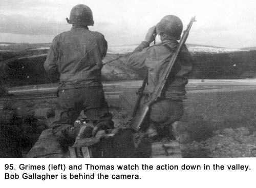 Over in St. Goarshausen, the men of the 89th were fighting house to house. Right after we arrived at the rim, ambulances began coming up from the valley heading inland from the river, and we had to get out of the way to let them pass. They must have gone down on the other road leading into St. Goar because we did not see them going in. The large prominently painted Red Cross stood out on the bleak OD color of these vehicles as somber reminders of what they were carrying. They represented the end of life, permanent injuries, or, at best, the beginning of painful recovery for their occupants. The drivers looked tense. Down in the gorge, a major operation was going on and there were remnants of battles that had taken place during the night. Across the river in St. Goarshausen we saw empty assault boats on the shore. Several dozen captured Germans were sitting near the water line guarded by GIs standing back near the buildings facing the river for shelter. About a hundred feet away, again close to the buildings, medics attended the wounded. What appeared to be bodies were lined up in a row a short distance away. Inland, there were GIs from the 89th Infantry Battalion fighting from house to house to take control of the town. It was not easy going as the Germans were putting up considerable resistance. Part of the firing from the Germans was coming from higher elevations, which made the GIs movements more difficult. The firing was heavy from both sides but it appeared the Germans were the only ones using artillery. The question was, where was our artillery? The smoke coming up from behind buildings facing the river was positively identified as a smoke screen laid down to conceal the movement of our infantry. Out on the river more boats were making the crossing and the men in them were huddled low trying to avoid the direct fire from across the river. They were taking hits, and it was horrible to see men slump down in their boats after getting shot. Several boats sustained heavier casualties than the others, and one was drifting downstream. On
the St. Goar side, boats and troops were crowded along Heerstrasse, one
block inland from the river (See Fig. 96). They were being readied to make
the dash down to the river to make additional crossings. One of the key
battles of World War II, the crossing of the Rhine River, was developing
before us and we had a bird's-eye view of it. All the players were in
place. The engineers, infantry, armor, and artillery were all performing
as assigned. The excitement was something that could never be duplicated
and we would remember forever. While the scene included death and
destruction, there was a wondrous feeling about the overall magnitude of
the picture. It was overwhelming to the senses, which registered many
emotions. The strongest was the horror of watching young men die,
especially those dressed like us. 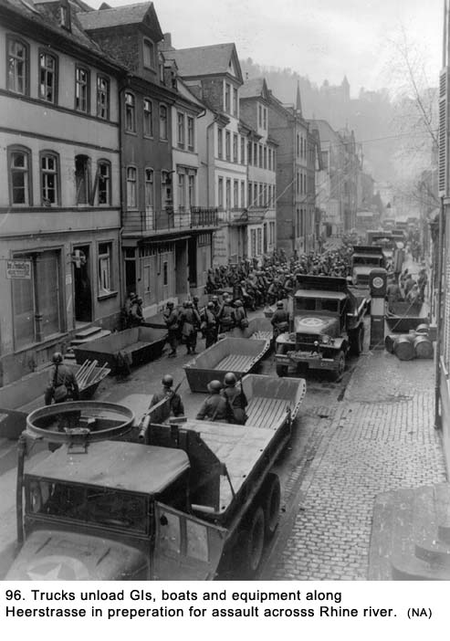 After watching for about twenty minutes, we returned to our gun pit. There, we checked out the status of the armor that arrived last night, watched the sky for enemy aircraft, and ate cold C-rations for breakfast. The whole gun crew was at the pit, as it was no time for sleep or any other activity. We looked across the river and speculated what was going on over there. What were those Krauts up to? Did they have to shave every day like we did? What were they eating for breakfast? Or, were they concentrating on more important matters like fighting for their lives against the invading American infantry? We were becoming a lot less worried about their artillery spotters watching us with binoculars and setting our coordinates. As the sun became stronger in the sky, the ground fog faded fast and we got a full view of our new neighbors in their armored vehicles. Their closeness made their size even more impressive, and their number had our crewmembers agape. Sitting there in the open fields, the armor contrasted with the serene setting of the postcard-like landscape. They seemed out of place, even in wartime, in the land of meadows, valleys, and a picturesque river. We still had not had a good view of any of their crews. They were lying low, not knowing what kind of fire they were going to get from the other side of the river. Finally, a head covered with a steel helmet would pop up, here and there, to check out the other side of the river. The weather was now becoming clear and sunny with unlimited visibility. Crow commented over the phone from the M-51 mount to our 40mm gun pit, Southern accent dripping in sarcasm, "What a day for a turkey shoot." Setting about thirty feet from us was one of the Army's latest tank destroyers (TDs). It was considerably larger than other American tanks like the Shermans we had seen in such abundance through out Europe. Other than the size, the main difference between a tank and a tank destroyer was the top of the turret was open on the tank destroyer. The one next to us was the new M36 model (See Fig. 97), the most powerful American antitank weapon of World War II. It had a high velocity 90mm gun instead of the 75mm most American tanks and tank destroyers had. It was designed to compete with the 88mm gun the Germans used in their Panzer (Armored) Divisions and was now ending the reign of that weapon. Tank destroyers in general played a vital role in the battle for Europe. 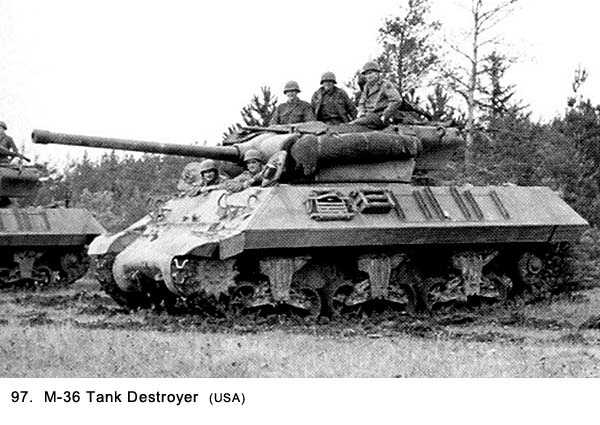 Until the 90mm came along, battle records showed it took up to four American tanks like the Sherman (32-tons with a 75mm cannon) to match one German Tiger tank (56-tons with an 88mm cannon) with its heavier armor and greater firepower.10 The American tanks made up for their deficiencies somewhat by their superior numbers and greater maneuverability. However, on a straight head-to-head confrontation, the Tiger and its high-velocity armor-piercing 88mm gun won every time against the Sherman. The tank destroyers in this operation up on the rim were part of the 602nd Tank Destroyer Battalion. The crewmen wore steel helmets instead of the leather crash helmets other tank crewmen had worn. Their slogan of "Seek-Strike-Destroy" was a strong indicator of their aggressive attitude toward the enemy. There were also tanks and tank destroyers that had gone down into the town of St. Goar during the night. They were now in position at that location to fire across the river at the enemy (See Figs. 98 and 99). 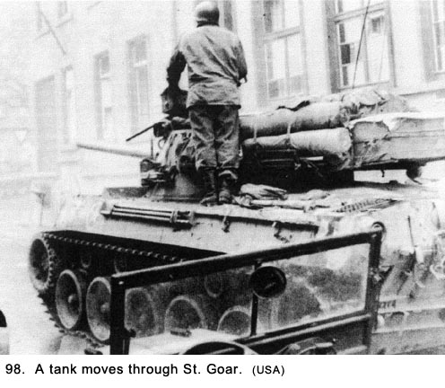
The tank and tank destroyer commanders on the rim near us were in radio contact with one another. We knew they were going to fire soon, so we asked the M36 commander who had the rank of staff sergeant to move further away. We had been around 90mm antiaircraft guns when they went off, and the noise would shake you down to your toes. He told us he had orders to be right where he was, and he wasn't going to move. At about 0800 hours, they all opened up, hurling their high-explosive shells at targets across the river. The vehicle near us roared, flames poured out of the muzzle, smoke engulfed the barrel, and the large brass shell casing came flying out the back of the vehicle. The deafening sound blasted our eardrums. One powerful explosion followed another. The mighty shells of destruction screamed across the river with a special kind of rage. The tank destroyer jolted and lurched backward at each shot. It was a very impressive war machine, threatening and menacing built to destroy anything it hit and to drive the enemy from his position. Most of our crewmembers stood in awe with their mouths open, glad it was on our side. We marveled at such power, and we knew we were watching a real killing machine. Between shots the loader slammed a new shell into the firing chamber. The vehicle made a whirring noise as the barrel was moved to take on a new target or to adjust for a second shot at what they had missed. Between rounds, we could hear the TDs engine throbbing when noise from other guns in the area didn't drown it out. The commander was now standing in the open turret, bracing himself against the side, directing the fire while looking through field glasses. After observing each shot the commander yelled out either, "Take that, you son of a bitch!" or just plain, "Son of a bitch!" depending on whether he had a hit or a miss. The armored vehicles were quiet only for the period of time it took to reload and set a new target. The vehicles generated thick smoke and an overpowering smell of gunpowder. It penetrated our nostrils and made us choke. We kept a special watch on the M36 tank destroyer near us in an effort to determine when it was going to fire next because it was less startling if you knew when the discharge was going to happen. The noise rattled our nervous systems, chattered our teeth and blasted our ears. We opened our mouths and yelled, and we put our fingers in our ears, which helped only a little. It may have been because we were in a gun pit the percussion seemed so loud. Stevens could not take the noise and moved back toward the forest to get away from it. The noise did not seem to affect the tank destroyer's crew nearly as much as it did us. Either they were used to it, or they had some kind of earplugs muffling the noise. The tanks down in the town were firing, and they made a womp, womp kind of sound which was louder than anything we had heard from down there before. The small arms and machinegun fire going across seemed insignificant but certainly they were not insignificant to the people on the receiving end. When the tank destroyer near us made a direct hit, the crew would let out a cheer we took to mean they were celebrating the accuracy of their gunnery, not the act of destroying the enemy. Could there possibly be a positive emotion in killing someone, even your wartime adversary? Or, was the excitement of the hunt so great its culmination in hitting a target produced a feeling of joy? Was the feeling some form of revenge for something that had happened earlier in the war? Did the fact they were some distance from the target have anything to do with it? Certainly, a bomber crew had less feelings about dropping a load of bombs on a heavily-populated city from fifteen thousand feet than an infantry man did in shooting a lone enemy soldier up close and watching the expression on his face before he fell. The majority of the American Army and probably the armies of most countries were draftees during major wars, and, therefore, most were reluctant warriors. What then made them ready to participate in killing other men and cheering when they succeeded? When and why did they learn to enjoy it? Perhaps they got caught up in the contest of winning or losing, and it became a matter of winning at all cost. Soldiers soon learned the options for the losers were being killed, wounded, captured or retreating in shame, none of which were desirable alternatives. I am not of the opinion expressed by some historians that war destroys the last vestiges of human dignity and substitutes a killer instinct void of a conscience. Perhaps this happens to a few, but not the majority of soldiers. My feeling is this appearance of enjoyment shown by the tankers near our gun pit was really a release of emotion driven by a rush of adrenaline that can be misconstrued as a show of pleasure. From my own experience, I learned there is nothing that makes the heart pound harder than hearing a large gun going off near you. The tank destroyer commander next to us was a very self-assured individual, bordering on being cocksure, which, from my limited observation, seemed to be a characteristic of many of the men who had that job. It undoubtedly came from having full control over a juggernaut of a vehicle capable of creating terror at first sight in the enemy then following through and turning that visual terror into total destruction. This sergeant in his souped-up, top-of-the-line tank destroyer had it. His bravado came from knowing he had a cannon bigger than other American TDs, a well-trained crew, a powerful engine, heavier armor plate, excellent maneuverability, the latest sighting system, and great speed. When you looked good, you felt good and you knew it. Men who feel sure their equipment, crew, and they themselves were better than their enemies made the best tank commanders, and the feeling of cockiness came naturally. It was a normal emotion. The sergeant in command of the tank destroyer next to our pit and all the other ones were directing their fire at specific houses. After about fifteen minutes of firing, I watched through binoculars as men I assumed to be German soldiers ran between the houses away from the river. The commander looked over at us and said, "Watch the (Cat) castle." He had gotten word by radio that the Germans were using one of the windows of the castle about halfway up the wall facing us as an observation site. The tank destroyer fired one shell, which hit just below the window knocking a hole in the wall despite its ample thickness. "Son of a bitch!" he yelled. The next shell went right into the window and exploded inside. Again, it was, "Take that, you son of a bitch!" The action continued throughout the morning when it let up but did not stop. We kept getting updates on what was happening down in the valley from one of our gun sections that had a better view of the river. They reported additional troops were going across.
Late in the morning, some of the Germans up on the slope behind the town must have decided they'd had enough, and started to pull out of their positions. The GIs were also flushing the Jerries out of basements in the town and starting to take over the village proper. More prisoners were being taken. They were being sent down to the river's edge to a temporary holding spot. The battle was becoming one sided. Again, several of us walked to the edge to watch the action with binoculars. From what we could see, there appeared to be only one road out of the town. The Germans located higher up were leaving on foot, in one truck, and in their version of the Jeep. They made perfect targets for the GI gunners. I watched a Jeep like vehicle pull out on the road with about eight men hanging on like flies. It immediately took a direct hit, and none of the occupants moved after that. The truck got almost to the rim where it, too, was hit. The cargo area was covered so I don't know what was in it. Those German soldiers who were leaving on foot seemed to be faring better than the vehicles. They were running from house to house instead of staying on the road, sometimes being chased by machine gun tracers from our side. It was pandemonium, and the Germans were taking heavy casualties. I did not see anybody make it to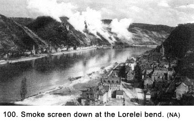 the top, but others in our crew said some did. There was still some firing coming from someplace on the Lorelei cliff and the Americans were throwing in a smoke screen to hide their assault on it. (See Fig. 100). The GIs in St. Goarshausen were moving cautiously as they were still under fire from higher elevations. The armored vehicles near us on the rim ran out of targets, so they cranked up and began pulling back along with the other armored vehicles along the rim. We could not determine if they were going down into St.Goar or to another location. They left hundreds of spent shell casings and empty packing tubes scattered behind. My ears were still ringing from the roar of the 90mm gun. Stevens had returned to the pit, and he was slapping one of his ears with the palm of his hand in a futile effort to bring his hearing back to normal. We learned later that a few of the 40mm guns from Battery A of our battalion had been firing shells across the river at German 20mm crews holed up in caves on the other side. We wondered why we were not also called on to fire. Not So Friendly Fire In the early afternoon, there were infrequent rounds being fired, but it seemed calm compared to what we had been experiencing. The sun was out, and it was a beautiful, clear day. We were lulled into complacency. We would take only an occasional look at the sky for enemy planes as we sat around the gun pit discussing the excitement of the night before. At about noon, Spearing was on the phone when, suddenly, he jumped into the pit and onto the horizontal tracking seat (his regular assignment) as he yelled, "Kaiser's (yes, his name was Kaiser!) been hit by strafing ME-109's!" We looked down toward the Lorelei bend in the river, and, sure enough, coming along at a very low altitude on our side of the river were two planes and they were strafing our gun positions. The red flashes were blazing from their machine guns. The only problem was they were not German ME-109 Messerschmitt's but American P-51 Mustang's (See Figs.101 and 102 for comparison).
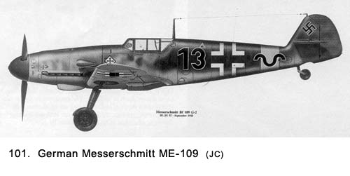 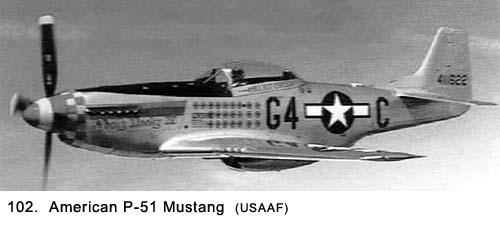 We could see the skin of the planes was metallic (the Germans used camouflage colors), and the big white stars on their wings were clearly visible as they made the turn in the river. They completed the turn and were headed directly at us. We were busy getting into position to fire with Spearing and Bapst, the two trackers, cranking like mad to turn the gun in the planes' direction. The question was, did we shoot at our own planes? Without any discussion, the answer evidently was "yes" because everyone continued to ready the gun for firing. I realized the planes would be directly overhead before we could get off our first shot. I grabbed the clutch at the back of the gun mount and pulled it up, disengaging the gears the trackers used with their hand cranks. Spearing, Bapst, and Wellington, the loader who was standing up on the platform, all yelled at me, "What are you doing?" I spun the gun around 180 degrees, so we could shoot on the downward leg. The three men were holding onto the gun to keep from being spun off during the rotation. At about the time when the planes went screaming by overhead, I reengaged the clutch, and the tracker searched out a target. The planes were so low when they went over our pit we could have hit them by throwing rocks. They were probably out of ammunition by the time they got to us because they had stopped strafing. Ack-ack tracers were coming from all directions. Our trackers picked up the second plane, which was a lucky move. The other plane stayed low, and was soon out of sight. The second plane nosed up into a 45-degree climb and made a perfect target for us. We were firing at it along with the other guns in the area when it took a hit. The left wing blew off, the cockpit canopy came off, the pilot bailed out, and the plane headed down into the river valley, seemingly all at the same time. The pilot pulled his parachute's ripcord and the last time we saw him, the chute was strung out behind him, but it was not billowing. He was headed down into the valley, and it looked like he was going to land somewhere on the outskirts of the town of St. Goarshausen. Some of the members of the other gun crews were on the phone "taking credit for downing the German Messerschmitt ME-109." The canopy got caught up in the wind and sailed over near our pit where several of us went and picked it up. We brought it back to our gun position, where I grabbed the field telephone. As I put the receiver end to my ear, I heard the debate about the type of plane that had been downed was still going on. "Scratch one Messerschmitt!" cried a voice coming in from one of our gun sections. The pride in his voice was obvious. I pushed the butterfly switch on the phone and said, "This is Gallagher, gun section number one, and we just picked up the canopy from that downed plane. For all of you idiots out there who identified it as a Messerschmitt, how do you figure that stenciled on the inside of the canopy are a lot of serial numbers and the words 'Made by the North American Aviation Company.' The last I heard, that is not a German Company." I released the butterfly switch so I could listen but there was a long pause as nobody spoke. Finally, Bill Sorenson in gun section number four got on the line and said, "How in the hell could they miss it? It was all silver with that big white star all over it. " (Bill and I had been the two best at identifying planes when we did so by flash-cards back in the States, and nobody would have challenged us even if we had less imposing evidence.) Bill then asked, "What else is written on the canopy, Bob?" I said, "The pilot's name, Lieutenant A. L. Vic, is written on the outside." Someone else, whose voice I didn't recognize got on the phone and told me, "Hang on to it, Gallagher, we'll be right out to pick it up." When I hung up, I turned to Dillon and said, "He said to hang on to it. What does he think we're going to do with it, eat it?" The canopy was shattered, so several of us in our gun section broke off pieces of the plexi-glass for souvenirs. In about 15 minutes, two Jeeps from Headquarters showed up and took the canopy away. Some time later, we were told the pilot had broken both of his legs from the fall, but he was recovering in a hospital. It amazed me some of the men in our battalion still could not distinguish between enemy planes and our own. Despite the fact we had all sat through hundreds of hours of training in aircraft identification, despite the fact we had previously been attacked by real Messerschmitts, and despite the fact the American planes we had just fired on were right on top of us, they still made the wrong identification. I suppose, to give them the benefit of the doubt, some gun crews were not as close to the planes as we were. We learned later several of our crews took cover in their pits after identifying the plane as American. That had been my first reaction but I got caught up in all of the excitement along with the others who were firing. It turned out that Kaiser had been hit only with flying dirt and was not seriously hurt. Several of his buddies wanted him to cut himself with a knife because, if he bled, he would get a Purple Heart medal. He didn't. There was also some discussion about whether you were eligible for a Purple Heart medal if the wound was inflicted by friendly fire. The strafing planes made some hits on equipment, but no one else was hurt. Much later, we learned that the American Ninth Air Force, of which these planes were part, had been labeled as "the American Luftwaffe" because of their prior attacks on American ground forces in Europe. After the war was over and letters were no longer censored, I wrote to a friend of mine named Frank Papie who was stationed in England with the Eighth Air Force. I told him about shooting down an American plane. He wrote back and said sarcastically, "Keep up the good work, Gallagher - (if you shoot down) four more American planes and you'll be a German Ace." Many years after the war (fifty-three to be exact - it was 1998), I learned more about the shooting-down of the P-51 Mustang. The incident happened on March 26, 1945. The planes that strafed us were from the 354th Fighter Group, which was part of the Ninth Air Force. They were flying out of an airfield in Plateau Lorraine near Metz, France, and the following information is taken from Microfilm roll BO-0312, frame 1760, of the Group records.
It turned out that the plane we shot down belonged to Lt. A.L. Vic but it was being flown on that day by Lt. Mark Baldwin, so, for over 50 years, I had the wrong name for the pilot.
It is interesting to observe the many contradictions between what I observed to be happening and what was reported in the Oprep. Of most significance was the fact the pilot of the plane was not Lt. A. L. Vic. Also of interest was the fact the pilots in the mission did not mention they had strafed our gun positions. Another contradiction was they were to make a pass from West to East. Actually they approached from the southeast. In 1998, after I learned from the Oprep report the pilot was Lt. Mark Baldwin, I found he lived before and after the war in a small town called Gillett, near Green Bay, Wisconsin. I called his home and found out, by talking to his son, that he had been killed in an airplane accident four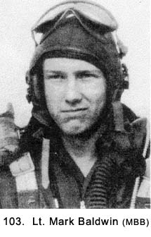 years prior to my call. His son sent me a picture of Lt. Baldwin (See Fig. 103). The son told me in the incident during the war, his father had bailed out when his plane caught fire and his legs were quite badly burned. However, after a series of operations he was able to lead a normal life. He was a member of the Wisconsin Air National Guard for many years after the war and flew his own small civilian airplane. He eventually crashed into a forest, which resulted in his death. After the war, Lt. Baldwin had written a summary of what had happened on the date he was shot down near the town of St. Goar:
It was quite a coincidence that despite all the many GIs who were now in St. Goarshausen, the three that Lt. Baldwin mentions above were from our antiaircraft unit, the same unit that shot him down. These men were part of our communications detail. The information from the Oprep Report and Lt. Baldwin's personal account not only corrected the fact that Lt. Vic was not the pilot who was shot down but also cleared up some questions I had about the event. I always wondered why the plane went into a climb instead of staying low with the other one. Also, how did the pilot eject from the plane so fast when one of his wings was shot off? Lt. Baldwin's notes made it clear the plane had been hit earlier (before his plane went into a climb) and he was gaining altitude so he could bail out at a higher elevation. He was already on his way out of the plane when the wing was shot off. After the P-51 shoot-down incident, most of the rest of the day was spent discussing what had happened down in the valley since midnight. It undoubtedly had been the most exciting time any of us had experienced. We tried to put the different incidents that had happened in order and, even though it was just a matter of a few hours, there was much disagreement about exactly and in what sequence things had happened. The one thing we all agreed on was how terrible the loss of American lives had been. This was only one small battle that was being repeated around the world. We all agreed we were an extremely lucky bunch of soldiers who did not have to fight like those we had just observed first hand. While this discussion was going on, I looked over at Bob Armbruster, with his lanky frame sitting on top of the sandbags with his feet dangling in the pit and the long trunk of his body arched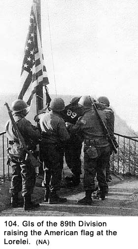 forward with his head bowed. He was a very religious person, and I knew he was silently saying prayers for those who were wounded or had died. Others noticed it too, and there was a long silence with each man left to his own thoughts. By late afternoon, the 89th division was able to raise the American flag and the Division colors on the summit of the Lorelei - a symbol of the teamwork and individual courage which had carried the Rolling W (89th) to victory across Germany's mightiest barrier (See Fig. 104).15 Several factors, in addition to the terrain, had made the actual crossing difficult. We learned later the Germans had anticipated and prepared for an assault at St. Goarshausen. They were well dug in and had the advantage of firing down from higher positions. Also, the logistics of not having enough assault boats and the length of time required to make a round trip were great handicaps for the GIs.16 We
heard our Headquarters Battery had moved down into St. Goar to set up
their command post. The bridge was called either a pontoon bridge or a treadway bridge. It was capable of supporting heavy equipment like trucks, artillery pieces, and even tanks. One of its great advantages, in addition to the fact that trucks could carry its parts, was the speed with which they could be assembled. 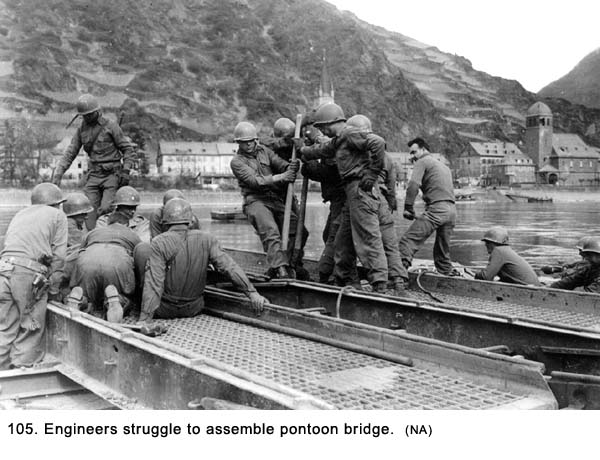 Erection of the treadway bridge by the 243rd Engineering Combat Battalion was scheduled to start at 0800 hours on the 26th but the enemy had not yet been cleared from the opposite bank by that time. When completed, the bridge across the Rhine River was 828 feet long and took twenty-five hours and fifty minutes to complete.17 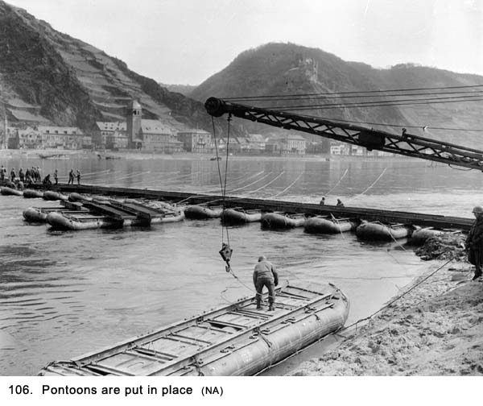 Immediately upon the bridge's completion, trucks with men aboard, artillery pieces, armored vehicles and supply trucks would begin pouring across. Another door into the heartland of Germany was opened, and the Third Army was taking full advantage of its convenience. 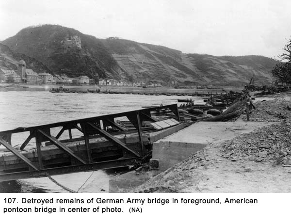 The next morning we were going about our normal duties when we noticed an odor permeating the pit area. Looking around, we found a trench nearby we had not noticed before with the bodies of two German soldiers in it who had been dead for some time. We assumed they had been holed up there as a rear-guard to slow the American troops down when the German army was retreating across the river some days before. Le Claire reached in to get their identification tags. We were going to cover them with dirt, stick their rifles out of the ground, and hang the tags from the guns. Le Claire saw a photo one of the dead men was still holding so he pulled it out and showed it to us. It was a picture of a young woman holding the hand of a child about three years old, and we concluded they were the soldier's wife and child. None of us said anything to each other, but things were somber. The picture registered a whole new perspective to the war and the killing that went with it. Even though we had seen many dead soldiers in Europe before that time, both American and Germans, we had thought of them only in the context of casualties of the war. They had not been identified with wives and children or anyone else for that matter. This incident made us think about the fact that for every casualty we saw, there was a whole string of people someplace who indirectly would also be victims of the war. In my own thoughts, I felt it was more than a little ironic we should be feeling sorry for these dead German soldiers when many of our fellow GIs had been annihilated the night before down in the valley. Whatever the strange anomaly of feelings, the tiny picture of a mother and child somehow distracted from the great achievement we had witnessed: the crossing of the Rhine River by the Allied troops. We decided not to bury the two soldiers, but I don't remember why. We just put a piece of tarpaulin over the trench to mask the smell and left it there until we were ready to move. Back at the gun pit, we discussed the two dead Germans. Were they loyal Nazis who goose-stepped past Hitler with great pride in all the regime represented? Or were they good family men who were drafted into the war to do a dirty job just like a lot of American GIs, and found themselves in a predicament of kill or be killed? Did they kill any GIs? The photo told us one of them had a family, but not much more. What else was there about them we did not know? The subject made interesting conversation, but the incident did not make a lasting impression on us. Because we had no true remorse, it was easy to avoid deep feelings about the two dead soldiers and to slip back into thoughts about the work at hand. We soon forgot about the two dead Germans. The next day, two men from our machine gun crew who were not on duty, Crow and Hughes, walked back into the forest about a block away to go deer hunting. We had seen deer on our two previous trips through it. The two hunters were both from the south and were always looking for some bird or animal to shoot at. Most of the rest of us had not been exposed to hunting in civilian life, and we looked on them with a certain feeling of disapproval. Why would you want to shoot a living thing just for the fun of it? It all went back to how we were raised and to what had been passed down to us by our fathers. The two of them came back with a dead fawn draped over Hughes's shoulders and there was blood all over his uniform. They appeared to be very proud of themselves. Most of us thought it was a pretty disgusting sight but we said nothing. They were going to prepare the deer and then roast it over an open fire. They invited us to the feast. We said, "No, thanks," and told them to build the fire far back from the rim and down near the road. As they walked away, Dillon had second thoughts and yelled to them, "Forget about the deer. Spend your spare time hanging around the M-51 mount in case you're needed." We had never been so close to enemy positions even though they had just been pushed back a bit, and he decided this was no time for a picnic. When I was off duty later that day, Joe Bernal and I decided to go back into the same woods and look around. We had no special objective in mind except it would be something different to do. Just hanging around a gun pit was getting very boring, and with no populated area nearby, there weren't many alternatives for exploration. On the way there, Joe said he wasn't feeling good and decided to go back to the tent area and lie down. I went on alone. After walking in the woods for a short period of time, I spotted a large buck grazing in a clearing. Instinctively, I raised my rifle to shoot and then realized that I really didn't want to shoot him. I decided to see how close I could get to him instead. I was surprised how near I got before he bolted into the trees. As I was standing there on the edge of the clearing, I saw something move out of the corner of my eye. It was two civilian men who were no more than thirty feet away before they spotted me. They were carrying two suitcases each and could not have been more surprised. The men were about thirty or thirty-five years old, the age for military service, I thought immediately. I pulled my rifle down off my shoulder and challenged them with a "Halt!" They dropped their suitcases but did not put their hands up. Now what! What do I do with them? They did not speak English, or, at least, they pretended not to because they looked blank as I fired questions at them. While questioning them, I kept running other questions through my mind. Do I search them? This would be hard to do and possibly dangerous working with an awkward rifle instead of a pistol. What did I expect to find? What was in those suitcases? Was it some of that loot we heard the Germans had taken from their victims, or was it just their clothing and personal effects? Why were they walking in the woods instead of out in the open areas adjoining it? Did I bring them back to the gun pit and call headquarters to come and pick them up? The problem was, I was more worried about the questions I would have to answer than the ones they would. How would I explain what I was doing in the woods in the first place, and what was my answer to such questions as "What did they do?" and "They were just passing by?" That didn't sound illegal. It would all depend on what was in those suitcases. Getting involved with one of our officers who would not know how to handle the matter in the first place immediately ruled out that decision. I debated checking the suitcases after moving the men back away from them but decided the easiest thing to do would be to end the matter. I told them to proceed on. For years, I wondered who these men were and what were they up to. Did I do the right thing in releasing them, and what really was in those suitcases? When I told the crew about the incident and the suitcases there was wide speculation about what they contained. It went all the way from Hitler's personal papers to a fortune in diamonds. I felt Bapst was closer to the truth when he said, "They probably live in the next town and were bringing their dirty laundry home to their mothers for washing." A Move Down To The River's Bank We stayed two more days up on the rim, and then we got March Order. We packed up and moved down into the town of St. Goar to set up positions next to the river with all of its natural beauty. The engineers had completed the pontoon bridge, and we were to guard it against attack. Gun crews were scattered along the bank of the river for about half a mile in each direction from the bridge. Some of the gun sections from other batteries in our Battalion went across and set up positions on the opposite bank. Some of them were located upstream as far as the Lorelei bend. There was a steady stream of trucks, armored vehicles, and equipment moving down from the rim and across the Rhine River. We watched the 155mm howitzers that had been throwing shells over our heads a few nights earlier navigate down the steep road into St. Goar. The huge guns being pulled by full-tracked prime movers made a spectacular sight as they slowly inched downward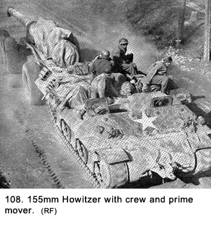 (See Fig. 108). Their brakes let out loud screeching noises as they labored to stem the forces trying to propel the rig downhill faster than was safe. They looked like some gigantic monster cannons that were never supposed to be mobile artillery pieces. They assembled in town and then moved across the pontoon bridge one at a time. Their enormous weight was a real test of the bridge's stability, and the engineers carefully observed each gun's progress all the way across. The engineers had about ten sharpshooters stationed along the length of the pontoon bridge facing upstream where they would shoot at anything floating down the river in case the Germans sent down explosives to the bridge. Intelligence sources had also reported the possibility of Gamma swimmers attacking the bridge. The noise from these sharpshooters occasionally firing always got our attention and often startled us. Although they were only using M-1 rifles and a few BARs, the shots were magnified many times as the noise ricocheted off of the canyon walls. We dug our gun in right next to the river on a little bluff that sat about ten feet above the water level. The pontoon bridge was about two hundred feet upstream of this position. The machine gun crew was about a hundred feet downstream. After completing the pit, we started to look around for some place to bed down. One of the crew stumbled on a real jewel. It was an impressive looking three-story home (one of the few in the town) with a white stucco exterior ideally located for our use. It was about two hundred feet directly inland from our gun, on a slope, so from the house we could look right down on the 40mm gun and machine gun pits. Located about three hundred feet directly downstream from the house was another castle. (See Fig.109). We found out it was built in the year 1245 and was called Burg Rheinfels. Dillon, Grimes and I could not figure out why we had not seen it the night we went down into the town with Lieutenant Kraft. It dominated the local landscape. 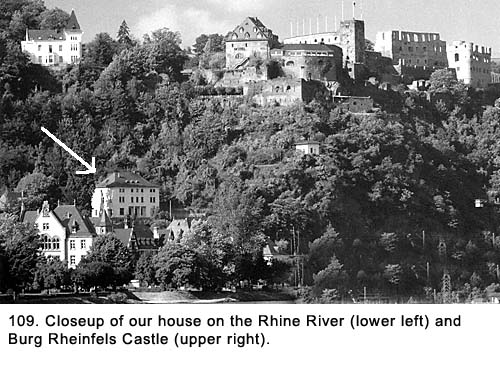 From rummaging through the house, we concluded a very high ranking German Naval Officer and his family had recently occupied it. They must have retreated with the German army when the American Army advanced on the town. Evidently, the family had left in a hurry. All the furniture, and everything that went with it, was still in place. Deep plush leather furniture, expensive-looking oil paintings adorning the walls, elaborately carved tables, oriental rugs on the floors, heavily draped windows and objects d'art. The dining room was beautifully decorated with ornate, almost regal looking furniture. The table with its rich wood was big enough to seat about twenty people. The high-backed chairs were upholstered in tapestry. The doors were all large and ornate and windows throughout the house were trimmed with heavy, rich-looking wood. The house in general was done up in a style we crew members had seen only in some elaborate movie set. The kitchen had rotting food left on the table and counters. While searching thorough the house, we found the naval officer's picture albums, and many of the pictures were of high-ranking Nazi officers and officials, including Admiral Doernitz (he would later sign the surrender treaty for the German people after Adolf Hitler committed suicide). There were pictures of the family and their friends at costume parties that rivaled any of the elaborate Hollywood movie scenes of that era. The sophisticated furniture and the photographs of luxury living were a conspicuous statement of the owner's wealthy and social prominence. On the upper floor of the house were bedrooms with fine linen and bedclothes. The baths were elaborate with much marble but the plumbing was not working. The second floor had a living room, dining room, kitchen, and a library where we spent most of our time. The first floor was for servants, and it had a large storage area. In this area, there were hundreds of jars of canned fruit and vegetables and many bags of potatoes and onions. There did not seem to be any shortage of food in this home, unlike other parts of Europe, especially in Germany. We settled in for an extended stay. While we were at this location, we slept in the beds and ate at the dining room table even though it was often just eating out of cans from our rations. There was a large verandah off the second floor,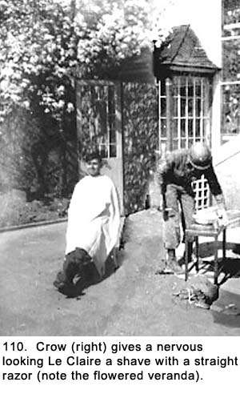 and we sat out on it when we were not on duty, enjoying the panoramic and breathtaking view. It was early spring and most of the flowering bushes and trees were in bloom. There was the strong smell of lilac bushes in the air. The weather was mild, and the sun shone every day. The banks of the gorge were lush green and ablaze with color from the spring blossoms. There were large plots of terraced land used for vineyards in better times that flowed down the hillsides. The river glistened from rays of the sun. The view was primarily upstream which meant that, in addition to the river, we were looking at the main part of the town of St. Goar. Off in the distance where the river made a bend was the Lorelei cliff, where a large outcropping of rock rises straight up for three hundred fifty feet. The scene would have made a good cover for a travel brochure. Despite the fact heavy fighting had gone on there a few days ago, the town still looked picturesque. It all looked so peaceful and normal. Even the engineer's treadway bridge with the steady stream of military vehicles passing over it added something positive to the view. It furnished us with a feeling the Third Army was moving deeper into the heart of Germany and we were winning the war. We were all starting to look quite shaggy from not having haircuts so we made Le Claire the resident barber. He set up shop out on the veranda. It was his first experience at this trade and the results showed it. After the haircuts, Crow took over the barber job and gave Le Claire a shave with a straight razor (See Fig. 110). We spent a lot of time on the veranda of “our” house and moved a desk out there for writing letters home. (See Fig. 110a) 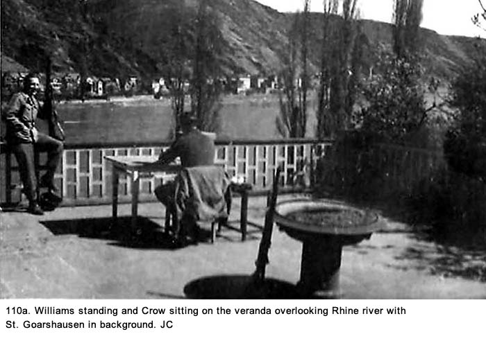 While we were at this location, it was difficult to concentrate on the fact there was a war going on. We took turns on gun duty, so there was a lot of leisure time. Ordinarily, we would use this time to roam around the area and see what was going on, but here the officers were watching us too closely. It was the only drawback to that location because a safe environment had brought out the brass. Also, St. Goar was such a small town we knew we would be observed no matter where we went. So we just lounged around the house on the plush leather furniture, talking, reading, and writing letters home. All our letters had to be turned into headquarters, where they were censored, polygraphed (copied), miniaturized on 16 mm microfilmed (making it easier to transport) and then sent to the States where they were developed and sent to their destinations. The end product was a sheet of paper about 4-inches by 5-inches that was called V-mail (See Fig. 111}. Tom Broderick, a close friend of the author in civilian life wrote this letter to his family on August 15, 1944 while he was stationed in England. He was a paratrooper with the 82nd Airborne Division. In the month following this writing, he would make a jump into enemy territory near the town of Arnem, Holland as part of a major military operation called Market Garden. The plan was to drive the Allied forces deep into Germany. Somewhere between the town of Arnem and the Nijmegen Bridge spanning the Rhine River, the final objective of the operation, he would receive a devastating wound that would affect his life ever after. 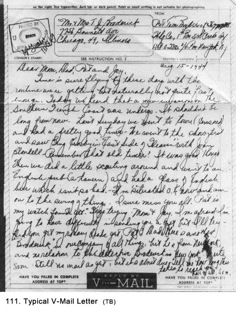 Most of us sent a minimum number of letters for three reasons. One, usually it was not convenient to do so. Two, there wasn't much to tell considering we could not explain where we were, what was going on, or even what the weather was like. Also, we did not want to worry our parents or loved ones so we did not mention unpleasant things. They were getting a very distorted picture of what was going on. Third, the officers in our battery were censoring our outgoing mail, and we did not want them to know our personal business. Despite their assurance that they did not repeat anything they read, we heard rumors they did. The censorship also kept us from griping about conditions, our number one topic of discussion. Censoring was done on a random basis so occasionally we would try to slip some information through. Usually, in the return mail, we would be told the letter we had written was unreadable. The large library in the house was located off the living room and from ceiling to floor it was rich-looking, highly polished wood. It had an extensive number of books. We could not read any of them because they were all written in German, but we could look at the pictures. A good number of them were pornographic. These were not the usual cheap publications that this kind of literature was known for at this period in history. The pages were all high-gloss paper, and most of the covers were ornate leather. Some of them had locks on them so we finally found a use for the bayonets we had been carrying around since the early days of our training. They made good lock openers. One of our crew mentioned on the phone, down at the gun pit, that we had found these kinds of publication. That same day, First Sergeant Ambrose showed up and hauled them all away. "To keep our minds pure," someone commented sarcastically. We had not yet learned to keep information from him. He was a lot better guy than Monteleone, but he had his moments. Sleeping in the beds was the most fun. With some men manning the 40mm gun and the M-51 mount at all times, there were enough beds for all those who were off duty. From force of habit, we did not take our clothing off before going to bed. There were a lot of comments about sleeping with white sheets, something that was entirely missing in Army life. Bapst found some washcloths in a linen room and he passed them out to the others with the comment, "Don't let Captain Mc Kee see you with that or he might get you transferred out of this outfit." It was a reference to one of Mc Kee's off-the-wall comments, "Real men don't use washcloths or umbrellas." Despite all the amenities of the house, we were still bathing out of our helmets because there was no running water. The latrine was a small trench located behind the house in some bushes. We were getting some fresh food about three times a week, and we ate C-rations on the other days. We opened some of the jars of fruit from the cellar to supplement the Army chow. We had been warned not to eat any civilian food because it might be poisoned. The first jar we opened was cherries, and we had planned to eat just one of them. If the fruit was poisoned, we would not get too sick from just one, or at least that's how the reasoning went. About thirty seconds after downing the first one, we continued to eat them, consuming the rest of the jar. Because they were so delicious, we could not wait. Fortunately, they were not poisoned. We moved a lot of our favorites (cherries, pears, peaches, and apricots) up into the kitchen, and we ate some every day we were at the location. One evening when I had just come in from gun duty, I saw the dining room table had been set. There was a linen tablecloth, fine china, silverware, crystal glassware, and lit candelabra on the table. One of our crewmembers, Bob Armbruster (See Fig. 112a), had set it up. Bob was one of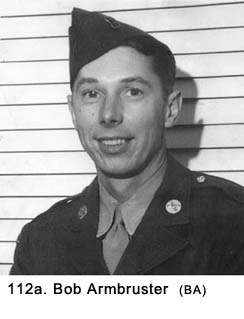 the few older men in our crew: about thirty-five years old at the time. Most of us were in our late teens or early twenties, so we looked on him as a father figure. He was tall and thin with a dynamic personality that kept him busy at all times. Bob had a sophisticated manner about him that shone through even when he was doing the most ordinary things of Army life. The rest of us were always horsing around with each other, and while he was very serious, he made no attempt to lecture us. He had strong religious beliefs and accepted the hardships of army life without complaining. While he was a good example for the rest of us, he did not have the effect of tempering the expressions of dissatisfaction of our military experiences we voiced frequently. That evening the men who were off duty sat down at this magnificent table to eat our meal. It was one of the times when we got fresh food from the battery kitchen set up somewhere in town. Bob, who was not known for his humor, played the part of a waiter served the meal. He draped a large white linen napkin over his left arm and referred to each of us as "sir" as he served the meal. Because he was out of character, his antics produced a lot of laughs. We all complimented him on doing such a great job setting the table, preparing the meal, and serving it in such a grand manner. After he had served all the men in the house, Bob sat down to eat his meal, and he asked if we wanted to continue with this way of eating while we were at this location. We all gave a rousing and enthusiastic, "Yes!" Bob then informed us that in order to spread the workload out, he would need two men for KP duty, one in the morning and another in the evening. "What did he say? KP duty!" That was a different story. It was the last formal dinner we had and we went back to eating out of mess kits and tin cans. We all liked the good life but not at the expense of being on KP duty again. Bob was very disappointed in us, but it wasn't the first time nor would it be the last. Stevens, who was still doing KP duty as part of his daily assignments, had helped Bob prepare the meal, which we began referring to as "the last supper." Stevens' contribution was primarily in building a fire in one of the house's several fireplaces to heat the food. He shook Bob up when he brought an ax into the house and announced he was going to chop up the dining room table for kindling wood. The table was made of inlaid wood and its beauty was striking even to a bunch of men who had all but forgotten what beauty looked like. Fortunately, Bob stopped him before he started to dismantle it. One
afternoon, when I was off duty, we heard the sound of people speaking
German down by the cellar door at ground level. Bapst and I grabbed our
guns, threw them over our shoulders, put on our helmets, and headed down
the stairs. We never went outside without our helmets. I don't know if we
were expecting General Patton to pop up around the corner with his
pearl-handled pistols and those yellow leather gloves, ready to slap us
across the face for being out of uniform, or if we had just gotten into a
habit. Down at the side of the house on a walkway, there were about twenty
civilians, mostly women and children going in and out of the basement
carrying armloads of food. The two men with this crowd were well over
seventy years old. Just like we had observed in other parts of Germany, it
was rare to see a civilian man between the ages of seventeen and seventy.
By this time in the war, the great majority of them were either in
uniform, dead, or prisoners of war. Bapst and I yelled, "Raus, Raus," as we pointed our guns at her. The guns did not have rounds in the chambers, but she didn't know that. I thought Bapst and I looked quite menacing because we both stood over six feet tall and weighed approximately two hundred pounds each. I had my gun about three feet from her, while Bapst was back a little farther. The woman walked right up to me and pushed the barrel of my gun to the side as she yelled at me in German. I heard Bapst let out a snicker from behind. The woman was yelling very loud, but the only word I understood was "Burgermeister" (mayor). I got the impression she was threatening to report me to the local mayor. I kept yelling back at her in English, and tried to make her understand that if the Burgermeister showed up, I would shoot him. She had dropped the bag of potatoes on the ground when she headed for me and now she returned to her task of picking them up and loading them into the wagon with the help of the young boy. Without even looking at Bapst or me, she then headed back down into the cellar. I looked at Bapst, and he hunched his shoulders as much as to say, "What do we do now"? Finally he said, "Why don't you shoot her? Either that or help her with the potatoes," and then he laughed. He was a big easy-going guy and would not have shot her if she had been running at him with a knife. The woman came back out with another bag of potatoes and put it in the wagon. It was now fully loaded or I am sure she would have gone back into the cellar again. She and the young boy started down the walk to the street. The woman turned and gave me a parting oath that I returned in kind, neither one of us fully understanding what the other was saying. As she rounded the corner, Bapst yelled at her, "Say hi to Hitler," and we both laughed. Bapst and I turned and went back into the building. At the time, we had not fully made up our minds about treating the episode as a joke but later saw the irony, if not the humor, in it. Several of the crew members asked us what all the commotion was about, and we just told them we had scared off some civilians who were looting food from the basement. We purposely neglected to mention an old woman had called our bluff. It wasn't our finest moment, so we left out the details. For days later, as Bapst came into the building from gun duty he would yell at me, "There's an old lady wearing a babushka downstairs looking for you, Gallagher, and she's got the Burgermeister with her, so, you're in big trouble." Bapst would then go hysterical with laughter. The rest of the crew just looked on as they tried to figure out the inside joke.
No enemy planes showed up while we were in the valley. We were enjoying this location, but we were also getting bored with nothing to do. When not lounging about, time was spent cleaned our military equipment and our personal clothing in an effort to make up for the lack of maintenance up until this time. We were getting quite proficient at bathing ourselves out of our helmets and, overall, we all looked much more neat and clean than when we arrived. We considered scaling the nearby castle, but its parapet walls loomed like some insurmountable mountain, so we abandoned the idea. I guess that's the impression castle walls are supposed to convey. The castle in St. Goar and the two across the river in St. Goarshausen were reminders the recent war activities were not the first of their kind in this valley. However, our war would not leave such magnificent structures for tourists to admire for the many following centuries. We were getting at least one visit a day down at the gun from the officers. They had to find something to justify their visit, so they usually complained about something trivial. Usually it was the condition of the pit that was starting to resemble an advertisement for a recruitment poster from all of the detailed care it was receiving. One day, Lt. Engler came by and suggested we paint the 40mm gun. He seemed to be in a good mood, so I jokingly told him we were supposed to be soldiers and not painters. He seemed to get a kick out of this, and I later learned it was because he had been a painter in civilian life. He thought I was needling him, but actually I only learned after the incident about his peacetime occupation. I finally convinced him the gun looked more camouflaged the way it was and he dropped the subject. In an effort to keep the idea of painting from coming up again, we wiped down all the metal parts with a mixture of gasoline and motor oil, which gave it a shine. Things were getting to be more like training in the States than a field condition. Fortunately, they left us alone in our house, which was starting to get very messy from lack of any cleanup. We knew that it would not pass an inspection of any kind, but, as long as we did not have to, we were not about to expend energy to leave a German officer's house in better condition than we had found it. On April 10th, we got March Order and we prepared to move out. We were leaving St. Goar with some mixed emotions. In some ways, it would have been a great place to sit out the rest of the war, but the day-to-day monotony had started to weigh heavily on us. We were looking forward to some new adventure at a new location. As we were leaving, we found our stay in that beautiful valley was not without incident. A soldier in A-Battery who was stationed on the other side of the river in St. Goarshausen had several fingers blown off a few days earlier. His crew had taken over a German gun position and he was handling one of their shells when it went off. He was sent to an Army hospital and then back home to be discharged. We all agreed he was lucky to be alive, and we were reminded about the danger of handling enemy equipment. Our new destination was unknown, and we wondered if it would be as exciting and interesting as St. Goar. Chapter 19 < - - - next Table of Contents < - - - return
Footnotes and Source of Photographs. Copyright, Robert F. Gallagher, 1999 - 2015, all rights reserved on all images and content.
|